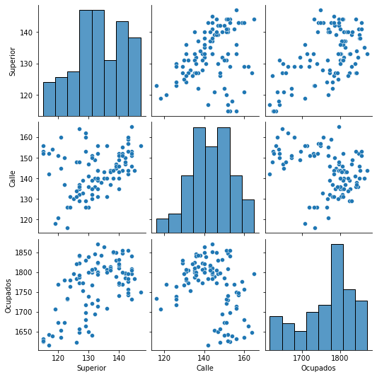
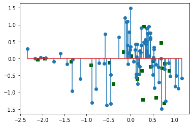

Regresión lineal múltiple con escalamiento de variables¶
Importar librerías¶
import numpy as np
import matplotlib.pyplot as plt
import pandas as pd
Importar datos¶
datos = pd.read_csv("BD.csv", sep=";", decimal=",")
datos.head()
| Medellin | Superior | Calle | Ocupados | |
|---|---|---|---|---|
| 0 | 1/07/2011 | 117 | 142 | 1616 |
| 1 | 1/08/2011 | 121 | 145 | 1653 |
| 2 | 1/09/2011 | 122 | 150 | 1673 |
| 3 | 1/10/2011 | 120 | 151 | 1673 |
| 4 | 1/11/2011 | 117 | 152 | 1642 |
Variable dependiente¶
y = datos.iloc[:, 3:4].values
y.shape
(100, 1)
import seaborn as sns
sns.pairplot(datos)
<seaborn.axisgrid.PairGrid at 0x158ac508>

datos.corr()
| Superior | Calle | Ocupados | |
|---|---|---|---|
| Superior | 1.000000 | 0.313056 | 0.561279 |
| Calle | 0.313056 | 1.000000 | -0.338839 |
| Ocupados | 0.561279 | -0.338839 | 1.000000 |
Multicolinealidad¶
Ideal tener VIF menor o igual 2,5.
from patsy import dmatrices
from statsmodels.stats.outliers_influence import variance_inflation_factor
# find design matrix for linear regression model using 'Ocupados' as response variable
y2, X2 = dmatrices("Ocupados ~ Superior+Calle", data=datos, return_type="dataframe")
# calculate VIF for each explanatory variable
vif = pd.DataFrame()
vif["VIF"] = [variance_inflation_factor(X2.values, i) for i in range(X2.shape[1])]
vif["variable"] = X2.columns
# view VIF for each explanatory variable
vif
| VIF | variable | |
|---|---|---|
| 0 | 352.876389 | Intercept |
| 1 | 1.108652 | Superior |
| 2 | 1.108652 | Calle |
Estandarización de variables¶
from sklearn.preprocessing import StandardScaler
scaler_X = StandardScaler()
X = scaler_X.fit_transform(X)
print(X)
[[-1.91956933 -0.13087188]
[-1.42483497 0.15781609]
[-1.30115138 0.6389627 ]
[-1.54851856 0.73519202]
[-1.91956933 0.83142134]
[-2.16693652 1.21633863]
[-2.16693652 0.92765066]
[-2.16693652 0.83142134]
[-1.79588574 1.02387998]
[-1.42483497 1.60125592]
[-0.68273342 1.9861732 ]
[-0.43536624 1.79371456]
[-0.43536624 1.60125592]
[-0.43536624 0.92765066]
[ 0.05936812 1.21633863]
[-0.18799906 0.73519202]
[-0.06431547 0.54273338]
[-0.31168265 0.35027473]
[-0.80641701 0.44650405]
[-0.18799906 0.6389627 ]
[-0.68273342 0.44650405]
[ 0.4304189 1.21633863]
[ 0.05936812 0.83142134]
[ 1.29620403 1.31256795]
[ 1.41988763 0.73519202]
[ 1.7909384 1.21633863]
[ 1.29620403 1.50502659]
[ 1.41988763 2.08240252]
[ 1.29620403 1.60125592]
[ 1.29620403 1.31256795]
[ 0.92515326 0.83142134]
[ 1.04883685 1.12010931]
[ 0.92515326 0.73519202]
[ 1.17252044 0.6389627 ]
[ 0.80146967 0.15781609]
[ 1.54357122 0.06158677]
[ 1.29620403 -0.13087188]
[ 1.17252044 0.35027473]
[ 0.30673531 -0.03464256]
[-0.06431547 -0.32333052]
[-0.18799906 -1.28562374]
[-0.31168265 -1.67054103]
[-0.43536624 -1.67054103]
[-1.17746779 -1.67054103]
[-0.55904983 -0.99693577]
[-0.68273342 -1.0931651 ]
[-0.18799906 -0.80447713]
[-0.18799906 -1.0931651 ]
[ 0.05936812 -1.18939442]
[ 0.4304189 -1.18939442]
[-0.68273342 -1.38185306]
[-0.43536624 -1.38185306]
[-1.54851856 -2.15168764]
[-1.17746779 -2.63283424]
[-1.67220215 -2.4403756 ]
[-1.0537842 -1.67054103]
[-1.0537842 -1.18939442]
[-0.9301006 -1.28562374]
[-0.80641701 -1.18939442]
[-0.68273342 -0.80447713]
[ 0.05936812 -0.41955984]
[ 0.18305171 -0.51578916]
[ 0.30673531 -0.32333052]
[-0.06431547 -0.70824781]
[ 0.05936812 -0.80447713]
[-0.18799906 -0.80447713]
[ 0.05936812 -0.32333052]
[-0.18799906 -0.41955984]
[-0.80641701 -0.90070645]
[-0.68273342 -0.70824781]
[-0.68273342 -0.61201849]
[-0.31168265 -0.2271012 ]
[-0.31168265 -0.70824781]
[ 0.55410249 -0.61201849]
[ 0.92515326 -0.80447713]
[ 0.67778608 -0.32333052]
[-0.68273342 -0.70824781]
[-1.30115138 -0.61201849]
[-0.55904983 -0.41955984]
[ 0.05936812 0.06158677]
[ 0.55410249 0.06158677]
[ 0.80146967 0.35027473]
[ 1.04883685 0.83142134]
[ 1.41988763 0.92765066]
[ 0.92515326 0.54273338]
[ 0.80146967 0.25404541]
[ 1.04883685 0.73519202]
[ 1.29620403 0.92765066]
[ 1.41988763 0.83142134]
[ 1.17252044 0.44650405]
[ 0.92515326 0.25404541]
[ 1.29620403 0.06158677]
[ 1.41988763 0.25404541]
[ 1.04883685 0.06158677]
[ 0.55410249 -0.03464256]
[ 0.4304189 -0.32333052]
[ 0.92515326 -0.03464256]
[ 0.92515326 -0.32333052]
[ 0.67778608 0.06158677]
[ 0.05936812 0.06158677]]
scaler_y = StandardScaler()
y = scaler_y.fit_transform(y)
print(y)
[[-2.24536638]
[-1.69382581]
[-1.39569577]
[-1.39569577]
[-1.85779733]
[-2.00686235]
[-2.11120786]
[-2.08139486]
[-1.90251684]
[-1.96214285]
[-1.76835832]
[-1.54476079]
[-1.29135026]
[-1.03793973]
[-0.7994357 ]
[-0.69509018]
[-1.08265923]
[-1.73854532]
[-2.14102087]
[-1.87270383]
[-1.6341998 ]
[-0.87396821]
[-0.54602516]
[-0.36714714]
[-0.53111866]
[-0.26280163]
[ 0.13967392]
[ 0.43780396]
[-0.15845612]
[-0.27770813]
[-0.39696015]
[ 0.03532841]
[ 0.03532841]
[ 0.27383244]
[ 0.31855195]
[ 0.25892594]
[ 0.25892594]
[ 0.43780396]
[ 0.69121449]
[ 0.63158849]
[ 0.00551541]
[-0.41186665]
[-0.72490319]
[-0.53111866]
[-0.20317562]
[ 0.08004792]
[ 0.48252347]
[ 0.57196248]
[ 0.52724297]
[ 0.60177548]
[ 0.84027951]
[ 0.92971852]
[ 0.03532841]
[-0.50130566]
[-0.88887471]
[-0.0392041 ]
[ 0.18439343]
[ 0.42289746]
[ 0.24401944]
[ 0.30364544]
[ 0.84027951]
[ 1.13840955]
[ 1.43653959]
[ 1.18312906]
[ 0.87009252]
[ 0.57196248]
[ 0.48252347]
[ 0.60177548]
[ 0.81046651]
[ 1.09369004]
[ 1.13840955]
[ 1.06387704]
[ 0.49742997]
[ 0.69121449]
[ 0.64649499]
[ 1.22784856]
[ 0.39308446]
[ 0.19929993]
[ 0.09495442]
[ 0.40799096]
[ 0.64649499]
[ 0.94462503]
[ 1.21294206]
[ 1.09369004]
[ 0.95953153]
[ 1.24275506]
[ 1.31728757]
[ 1.31728757]
[ 0.61668198]
[ 0.45271046]
[ 0.09495442]
[ 0.43780396]
[ 0.57196248]
[ 0.49742997]
[ 0.55705598]
[ 0.49742997]
[ 0.7508405 ]
[ 0.79556001]
[ 1.27256807]
[ 1.5557916 ]]
Ajuste de regresión lineal múltiple¶
from sklearn import linear_model
regression = linear_model.LinearRegression()
regression.fit(X, y)
y_pred = regression.predict(X)
MSE¶
from sklearn.metrics import mean_squared_error, r2_score
mean_squared_error(y, y_pred)
0.3914363275354995
Parámetros del modelo¶
regression.intercept_
array([-1.42462547e-15])
regression.coef_
array([[ 0.73986395, -0.570458 ]])
Resultados de la regresión lineal múltiple con statsmodels¶
import statsmodels.api as sm
X_ = sm.add_constant(X)
modelo = sm.OLS(endog=y, exog=X_).fit()
print(modelo.summary())
OLS Regression Results
==============================================================================
Dep. Variable: y R-squared: 0.609
Model: OLS Adj. R-squared: 0.600
Method: Least Squares F-statistic: 75.40
Date: Thu, 08 Oct 2020 Prob (F-statistic): 1.75e-20
Time: 17:49:07 Log-Likelihood: -94.997
No. Observations: 100 AIC: 196.0
Df Residuals: 97 BIC: 203.8
Df Model: 2
Covariance Type: nonrobust
==============================================================================
coef std err t P>|t| [0.025 0.975]
------------------------------------------------------------------------------
const -1.544e-15 0.064 -2.43e-14 1.000 -0.126 0.126
x1 0.7399 0.067 11.061 0.000 0.607 0.873
x2 -0.5705 0.067 -8.529 0.000 -0.703 -0.438
==============================================================================
Omnibus: 0.271 Durbin-Watson: 0.452
Prob(Omnibus): 0.873 Jarque-Bera (JB): 0.417
Skew: -0.102 Prob(JB): 0.812
Kurtosis: 2.759 Cond. No. 1.38
==============================================================================
Notes:
[1] Standard Errors assume that the covariance matrix of the errors is correctly specified.
Gráfico de los residuos¶
residuales = y - y_pred
residuales = residuales[:, 0]
plt.stem(y_pred, residuales)
<StemContainer object of 3 artists>

QQ plot¶
import scipy.stats
scipy.stats.probplot(residuales, plot=plt)
plt.title("QQ plot de los residuales")
plt.show()

Evaluación del rendimiento¶
Conjunto de entrenamiento y conjunto de testing¶
from sklearn.model_selection import train_test_split
X_train, X_test, y_train, y_test = train_test_split(X, y, test_size=0.2, random_state=0)
Estandarización de variables¶
scaler_X = StandardScaler()
X_train = scaler_X.fit_transform(X_train)
X_test = scaler_X.transform(X_test)
scaler_y = StandardScaler()
y_train = scaler_y.fit_transform(y_train)
y_test = scaler_y.transform(y_test)
Ajuste del modelo de Regresión lineal múltiple con el conjunto de entrenamiento¶
regression_1 = linear_model.LinearRegression()
regression_1.fit(X_train, y_train)
y_train_pred = regression_1.predict(X_train)
y_test_pred = regression_1.predict(X_test)
Evaluación del modelo con el el conjunto de testing¶
Gráfico de los residuos del conjunto de entrenamiento y de testing¶
plt.stem(y_train_pred, y_train - y_train_pred, use_line_collection=True)
plt.scatter(y_test_pred, y_test - y_test_pred, marker="s", c="darkgreen")
plt.show()
